AI 臭が招く離脱と順位下落
技術スコアが高くてもユーザーが直感的に「AI 臭」を感じると即座に離脱。Google アルゴリズムは E-E-A-T で人間性を厳格判定し、検索順位の下落へ。従来の SEO 指標では検知不能な品質劣化。
Website Critique · AIスロップ即診断 Chrome 拡張 · Issue № 05/26
生成 AI が Web コンテンツの8 割を占める AIスロップ（AI Slop）時代、Google の検索アルゴリズムは E-E-A-T 評価で「人間味」を厳格に判定する。技術 SEO スコアが高くても、ユーザーが直感的に「AI 臭」を感じるサイトは即座に離脱と順位下落を招く——いま「人間性」こそが Web 戦略最大の通貨だ。
2026-05-25 リリースの Chrome 拡張 Website Critique は、ブラウザを開くだけで AIスロップをリアルタイム検知・可視化する。Hedge 表現抽出 × 構造的テンプレート感警告 × リアルタイム UI 診断で改善サイクルを従来の 1/5に短縮。技術基盤は統計的フィンガープリント（パープレキシティ × バースト性）と暗号学的証明（C2PA / Deterministic CBOR / SHA-256 Hard Binding）のアンサンブル。マーケターの CVR 向上、デザイナーの独自 UX 設計、Web 運用者の管理コスト 80% 削減——Lighthouse の死角だった「コンテンツの人間性」を補完する唯一無二のポジションを確立する。
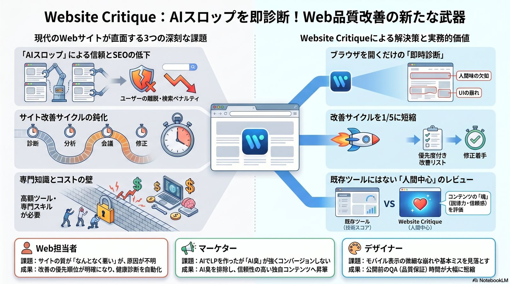
Web 品質を決めるのは、もはやLighthouse スコアでも Core Web Vitals でもない。AI が生成した「魂のないテキスト」を見抜き、ユーザーに 「人間が作ったページだ」と直感的に感じさせる質感そのものへ評価軸が完全に移行した。
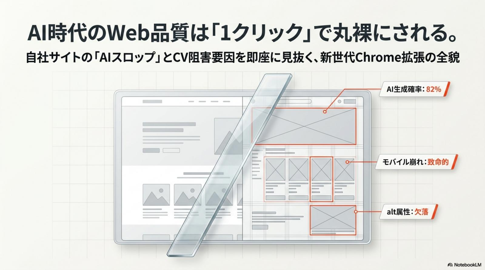
2026-05-25、Web 業界は決定的な転換点を迎えた。デッド・インターネット理論（Dead Internet Theory）が現実味を帯びるほどに、ネット上には低品質でテンプレート的な「AIスロップ（AI Slop）」が氾濫している。Google は E-E-A-T（経験・専門性・権威性・信頼性）の検証において、かつてないほど「人間味」を厳格に評価するようになった。
技術スコアが高くてもユーザーが直感的に「AI 臭」を感じると即座に離脱。Google アルゴリズムは E-E-A-T で人間性を厳格判定し、検索順位の下落へ。従来の SEO 指標では検知不能な品質劣化。
診断 → 分析 → 会議 → 修正という従来サイクルの遅さ。実務者が抱える「定性的品質評価の限界」を放置すると、競合との差は日に日に広がる。感覚的なボトルネックを即時改善タスクに変換できる仕組みが必要。
従来の品質監査ツールは高額かつ専門スキル必須。「改善の優先度判断」「健康診断の自動化」が困難で、Web 担当者の属人化と工数膨張が止まらない。中小チームほど影響が深刻だ。
箇条書きと「まとめ」だけで構成された深みのないセクション、独自データ・一次情報の欠如——これらが蓄積するとブランド価値は静かに毀損される。AI 時代のブランド防御の最優先事項として認識せよ。
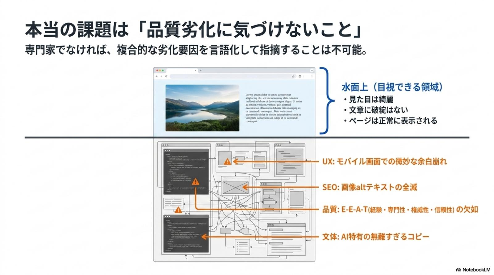
Website Critique は、ブラウザ上でリアルタイムに AIスロップを検知・可視化することで、Web 実務者が直面する「定性的な品質評価の限界」を解消する。マーケター・デザイナー・Web 運用者の 3 ペルソナを、それぞれ異なる視点から解放する設計だ。
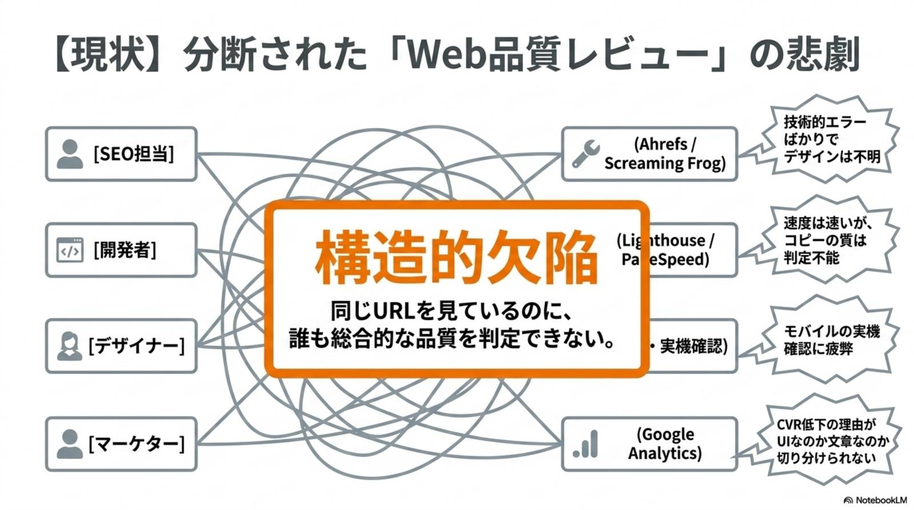
Website Critique はブラウザネイティブな拡張機能として動作し、URL 入力や解析待ちの時間を消失させる。改善サイクルは従来の約 1/5 まで短縮。AIスロップ特有の「レッドフラグ」を瞬時に特定し、品質管理を「定期検診」から「リアルタイム最適化」へ進化させる。
人間が気づきにくい AIスロップ特有の言語的・構造的パターンを瞬時に特定。診断から実行までのタイムラグが消失することで、Web 品質管理は新しい次元へ進む。「定期検診」が「リアルタイム最適化」へ転換する瞬間だ。
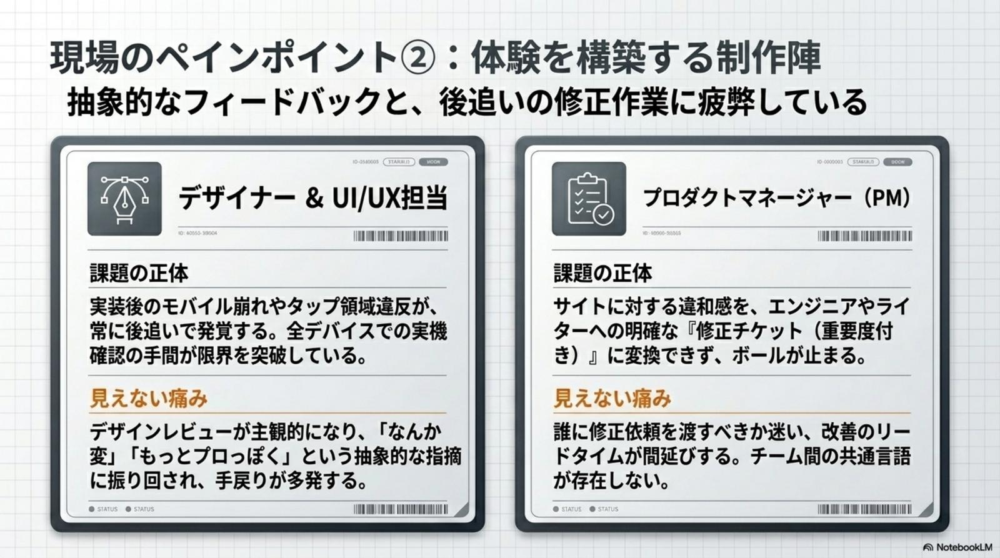
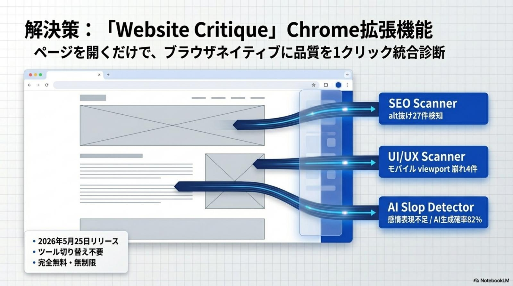
本ツールの信頼性は、統計的アプローチと暗号学的証明のアンサンブルによって担保される。言語モデルの予測可能性を捉える統計指標と、C2PA 規格に基づく 「改ざん耐性 100% の証明」が組み合わさり、AI 生成の有無を高い確実性で判定する。
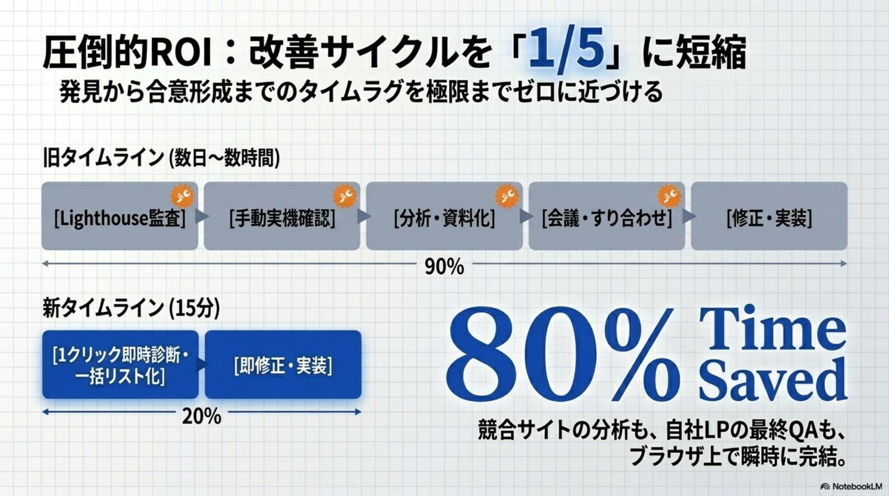
画像や動画などのメディアに対し、C2PA 規格に基づく Content Credentials の有無を検証する。決定論的シリアライズと暗号学的ハッシュバインディングによって、AI 生成の有無を 100% の確実性で判定可能な独自の信頼基盤を確立した。
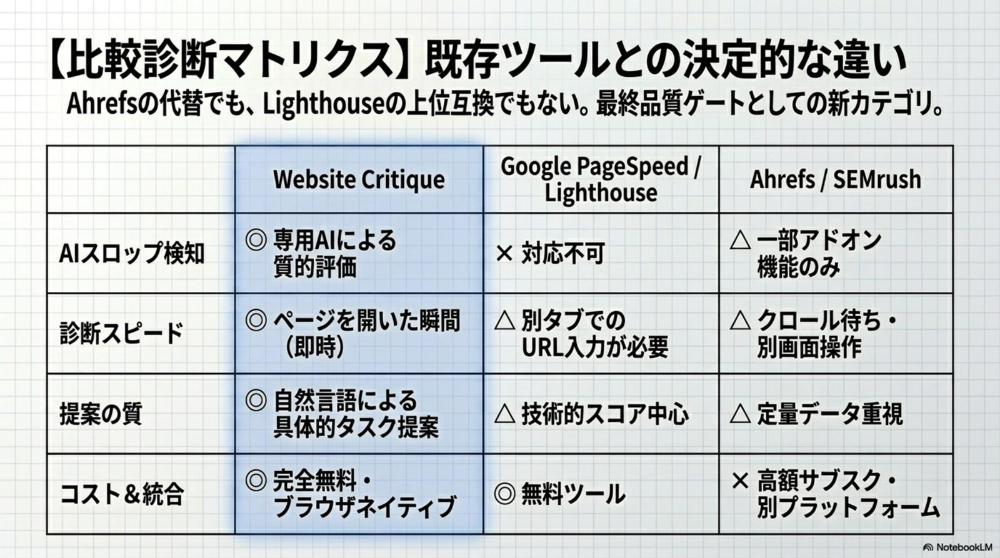
Website Critique は、Lighthouse（技術性能）や Ahrefs（ドメイン権威性）の「死角」であった「コンテンツの人間性」を補完する唯一無二のポジションを占める。既存ツールと競合するのではなく、補完関係で価値を最大化する設計だ。
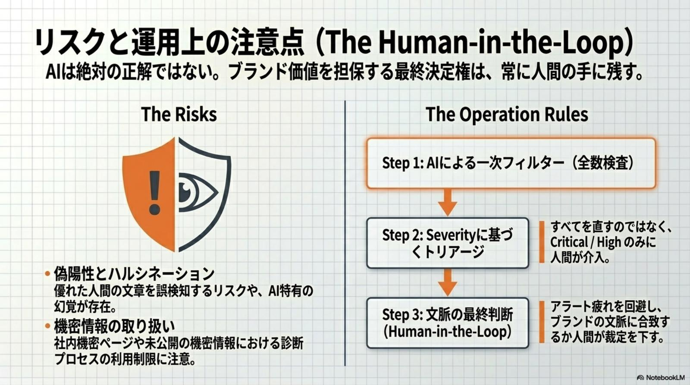
1 つの指標に依存せず、技術 × 権威 × 人間性の三軸で Web 品質を立体的に評価する。それぞれが見える領域と死角を理解し、組み合わせて運用することが2026 年のプロフェッショナル定石だ。
Website Critique を実務フローへ即時統合し、競合優位性を築くためのチェックリスト。AIスロップが溢れる時代だからこそ、「人間らしさ」という希少価値の最大化が持続可能な Web 戦略の基盤となる。
Chrome Web Store から「Website Critique」を導入。ブラウザ拡張のため30 秒で完了。導入直後から全ページで即時診断が走り出す。
主要 LP や最新記事を順番に診断し、Hedge 表現や冗長な定型句を削除。CVR への影響が大きいファーストビューと申し込みフォーム周辺を最優先。
競合の「低努力感」を可視化し、自社の独自性を強調するデザイン・文章戦略を策定。AI スコア比較を提案資料の根拠として活用すれば説得力が桁違いに上がる。
公開前チェック項目に「AI 生成感スコア」を組み込み、品質の均一化を図る。属人化していた品質判断を組織標準のチェックリストに転換し、誰でも同じ基準で運用可能に。
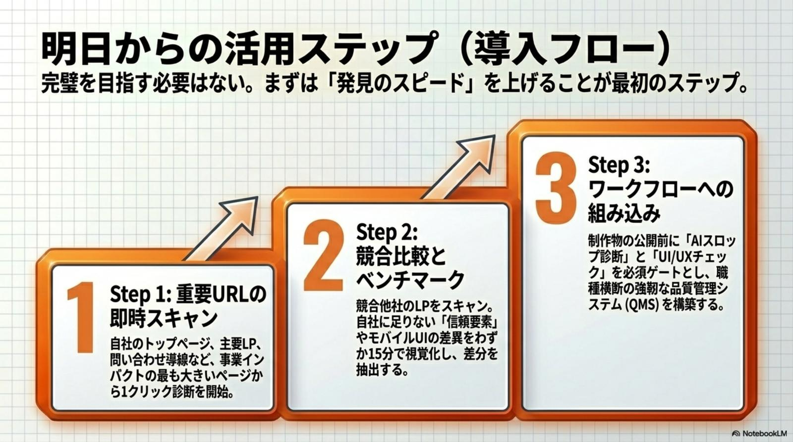
Website Critique はWeb 品質自動化の先駆けであり、今後 VisionHub 等のプラットフォームと連携することでデザインと自動化が融合した次世代の品質管理フローを形成する。AIスロップへの対策は単なる技術対応ではなく、2026 年におけるブランド防御の最優先事項だ。
2026 年以降、Web サイトの真の差別化要因は「コンテンツの人間性」となる。AI で量産されるテンプレ記事の海で、「人間が一次情報を書いている」という証明そのものが希少価値を持つ。Website Critique はその監査基盤として、ブランド防御の必須インフラへ昇格する。
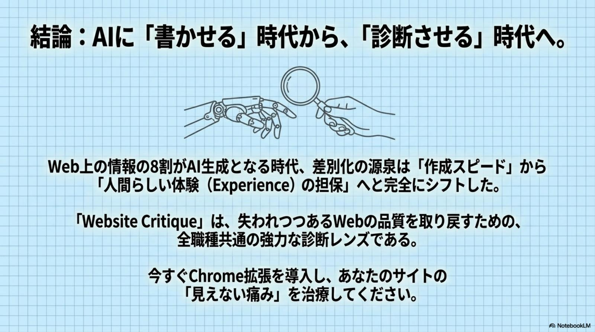
Website Critique の活用方針は立場ごとに異なる。最初の一歩を間違えなければ、3 ヶ月後の Web 品質は別物になる。
LP のAI 生成感スコアリングで「広告費の無駄」を即特定。Hedge 表現を排除し、独自データ・一次情報を中心とした構造へ書き換え——信頼性回復による CVR 向上と広告 ROI 最大化を実現する。
競合サイトの「低努力感（テンプレート感）」を AI に言語化させ、構造的繰り返しやジェネリック設計を論理的に指摘。独自性の高い UX 設計と説得力ある提案を、データを伴った形で実現する。
ページを開くだけで SEO・UI・AI 臭を横断診断。サイトヘルスの多角的な維持と管理コスト 80% 削減を同時に達成。公開前 QA に AI 生成感スコアを組み込み、品質の均一化と属人化解消を実現する。
AIスロップが溢れる時代だからこそ、「人間らしさ」という希少価値を最大化することが、持続可能な Web 戦略の基盤となる。— Web 品質の新基準 · AIスロップ時代における Website Critique の戦略的価値 · 2026-05-26
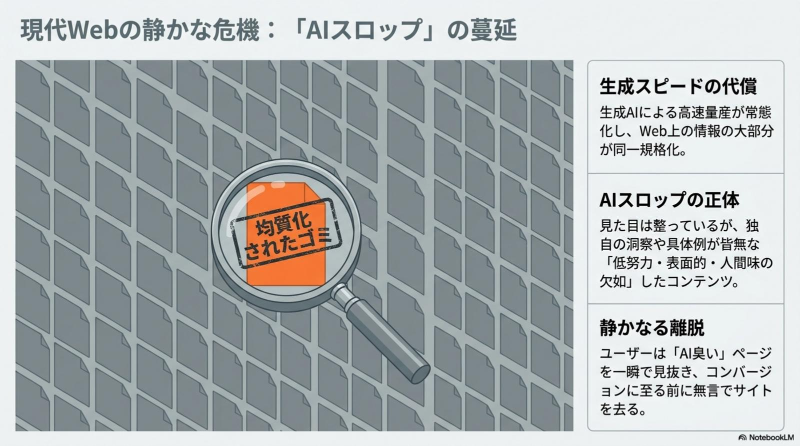
Website Critique 以外の 2026-05-26 主要トピックを併せてピックアップ。